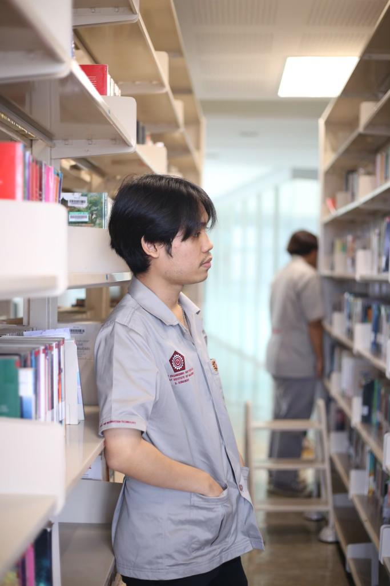

|  |
ชื่อ นามสกุล: สรวัฒน์ สุดประเสริฐ ตำแหน่ง: นักศึกษา สาขาวิชา: DIT สถาบันการศึกษา: สถาบันการจัดการปัญญาภิวัฒน์ |
ชื่อ: สรวัฒน์ สุดประเสริฐ
ชื่อเล่น: แฟ้ม
สาขาวิชา: DIT
กลุ่มเรียน: G1
เหตุผลที่อยากเรียน Full Stack Web Development คือการพัฒนาเว็บไซต์ที่มีความสามารถในการจัดการทั้งด้านหน้าบ้านและหลังบ้าน
ความคาดหวังต่อวิชานี้คือการเรียนรู้เกี่ยวกับการทำ Webside เพิ่มเติม เพื่อพัฒนาทักษะไว้ใช้ในการเข้าฝึกงานและทำงานต่อในอนาคต
จุดอ่อนที่ต้องพัฒนาคือความเข้าใจในเรื่องการเขียนโค้ดให้มีประสิทธิภาพ แนวทางการพัฒนาทักษะการเขียนโค้ดโดยการศึกษาจากแหล่งความรู้ที่มีคุณภาพ

| Skill | ระดับพลัง | Skill | ระดับพลัง |
|---|---|---|---|
| HTML | ⭐ | CSS | ⭐ |
| JavaScript | ⭐ | Python | ⭐ |
| Years | Position | Work Place |
|---|---|---|
| 2024-2024 | Trainee | Eleven |